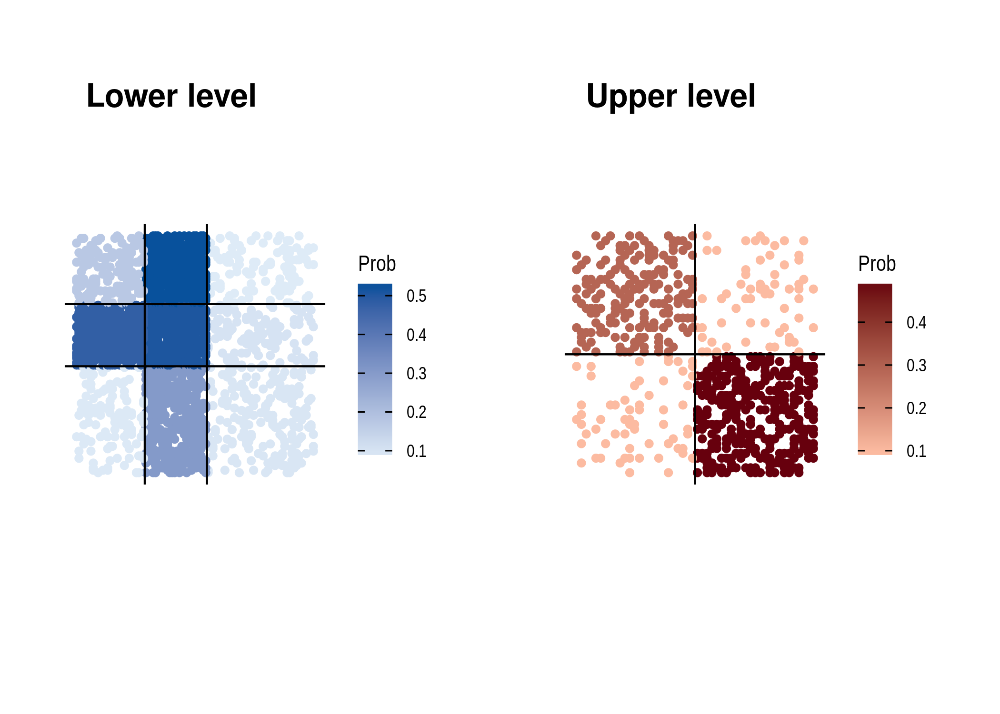

The goal of MLVSBM is to …
Installation
You can install the released version of MLVSBM from github with:
devtools::install_github("Chabert-Liddell/MLVSBM")Example
This is a how to simulate a multilevel SBM network:
set.seed(1)
my_mlvsbm <- MLVSBM::mlvsbm_simulate_network(
n = list(100, 50),
Q = list(2, 2),
pi = c(.5, .5),
gamma = matrix(c(.8, .2, .1, .9), ncol = 2),
alpha = list(matrix(c(.2, .1, .1, .2), nrow = 2, ncol = 2),
matrix(c(.7, .4, .4, .1), nrow = 2, ncol = 2)),
directed = list(FALSE, FALSE),
affiliation = "preferential",
no_empty_org = FALSE)This is how to create a network from data:
lower_level <- my_mlvsbm$adjacency_matrix$I
upper_level <- my_mlvsbm$adjacency_matrix$O
affiliation <- my_mlvsbm$affiliation_matrix
my_mlvsbm2 <- MLVSBM::mlvsbm_create_network(X = list(lower_level, upper_level),
A = affiliation)And this is how to infer it:
fit <- MLVSBM:::mlvsbm_estimate_network(my_mlvsbm)
#> [1] "Infering lower level :"
#> [1] "# cluster : 1, ICL = -2192.19033182791 !"
#> [1] "# cluster : 5, ICL = -2336.41442645132 !"
#> [1] "# cluster : 4, ICL = -2268.39424998752 !"
#> [1] "# cluster : 3, ICL = -2235.75995262921 !"
#> [1] "# cluster : 2, ICL = -2206.68083498789 !"
#> [1] "# cluster : 1, ICL = -2192.19033182791 !"
#> [1] "Infering upper level :"
#> [1] "# cluster : 1, ICL = -840.403791989084 !"
#> [1] "# cluster : 2, ICL = -796.208742941495 !"
#> [1] "# cluster : 5, ICL = -847.872907916854 !"
#> [1] "# cluster : 4, ICL = -811.946225345139 !"
#> [1] "# cluster : 3, ICL = -791.749205113861 !"
#> [1] "# cluster : 2, ICL = -775.438351381624 !"
#> [1] "======= # Individual clusters : 1 , # Organisation clusters 2, ICL : -2964.19810286294========"
#> [1] "======= # R clusters : 2 , # L clusters 2, ICL : -2956.40886387674========"
#> [1] "======= # R clusters : 2 , # L clusters 2, ICL : -2956.40886387674========"
#> [1] "ICL for independent levels : -2967.62868320953"
#> [1] "ICL for interdependent levels : -2956.40886387674"
#> [1] "=====Interdepence is detected between the two level====="